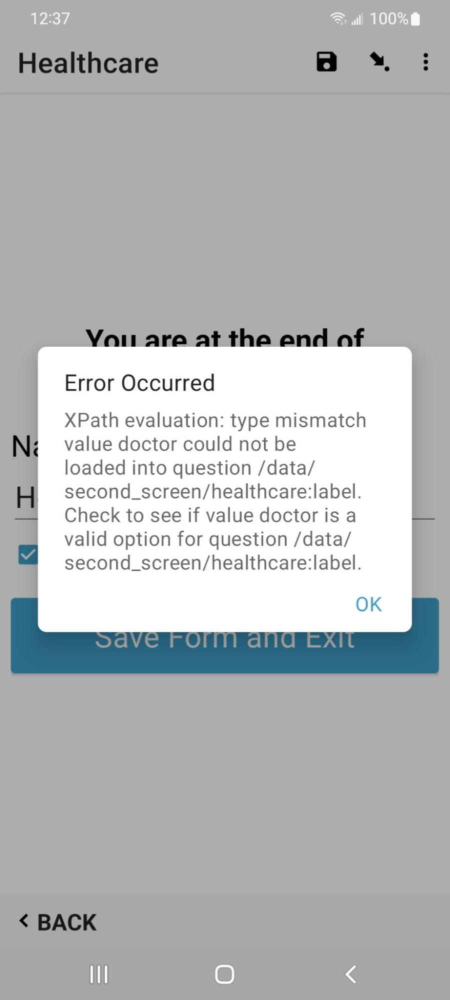

Dealing with External Data in ODK¶
External Datasets¶
ODK Collect has recently gained the ability to load an external data file in GeoJson format of existing data. It's now possible to select existing data and then import its values into the XForm as default values. This lets the mapper use the XForm to change the existing data, or add to it. Any changes will need to be conflated later, that'll be another document.
Why do I want to use ODK Collect to edit map data? Much of what is currently in OpenStreetMap is lacking metadata, or the data has changed, like when a restaurant changes owners and gets a new name. Also most all remote mapping using satellite imagery lacks tags beyond building=yes. When we are doing a ground data collection project, we want to add useful tags like the building material, or whether it's a cafe or a hospital.
Old imports also bring in problems, for example the infamous TIGER import. Mappers have been cleaning that mess in North America up for over a decade. But an old import may have a weird value for an OSM tag, and it's usually better to update to a more community approved data model. The beauty and the curse of OSM data is its wonderful flexibility. People do invent new tags for a specific mapping campaign or import that doesn't get reviewed. Sometimes values have embedded quote marks or weird capitalization, and other strange formatting worth correcting.
Creating the GeoJson file¶
When working with OSM data, there are multiple sources to obtain the required data. One option is to download a daily database dump from GeoFabrik, which can be used as a flat file or imported into a database. The Humanitarian OpenStreetMap Team(HOT) maintains two projects that can also be used for data extracts. The primary one has a web based user interface, and is called the HOT Export Tool. The other option runs in a terminal and is part of OSM Fieldwork project, and is also used as part of the Field Mapping Tasking Manager backend. That program is available here. Alternatively, Overpass Turbo can also be used to query the data but you have to understand the Overpass query syntax.
It's important to keep in mind that there is a translation between the column names obtained from querying the data and how ODK Collect views it. There is also a translation from ODK to OSM, and it's important to ensure that all translations work together seamlessly for a smooth data flow. To maintain clarity, it's best to keep all tags and values as similar as possible, with unique names. When using ogr2ogr for data extraction from a Postgres database, there is more control than when using Overpass, and larger datasets can be processed. You can clean up all the tag names later if you add a custom config file for the conversion.
As the GeoJson file gets turned into an XPATH components when converted to an XForm, the actual filename without the suffix becomes a node in the XPATH, so you can't have a survey question using the same name as the filename. It is prefered to have the name using the actual OSM tag instead of the file. If you get this error, you need to rename the GeoJson file.
Duplicate type: 'choice', Duplicate URI: 'None', Duplicate context: 'survey'.
Naming Conflicts¶
If you do want to use an OSM tag name in a calculate field, a technique for maintaining consistency is to prefix an x to the start of each column name, so healthcare becomes xhealthcare. Then, in the XLSForm, healthcare can be used for the instance, and xhealthcare can be used for the value in the calculation column in the survey sheet. The name column in the survey sheet can then be just healthcare, which will translate directly into its OSM tag equivalent. For this example note that the GeoJson file must not be named healthcare.geojson, because it'll conflict with _healthcare. You can also avoid this by having the calculation in the same row as the survey question and avoiding the variable. If you do that, add a trigger for the geojson file, and it'll populate the default value for the question.
It's possible to support almost any value using a text type in the XLSForm, but it's better to have an approved value for tag validation and completeness. If using a data model, the list of choices for a tag is defined, and anything outside of that will cause an error. Therefore, it's important to adhere to validated data models to avoid introducing errors or inconsistencies into the dataset. If the SQL query returns columns that aren't compatible with the XLSForm, XPATH errors will occur in ODK Collect.
Something else to consider is the frequency of the tags and values. Since almost anything can be added to OSM, there are a lot of obscure ones. It's strongly suggested to use more common tags and values. A resource for this is the Taginfo website, which lists everything every used in OSM. There are two columns of interest, one is whether the tag is on the OSM wiki, and the other is how many times that tag is used. I try to use tags that are on the wiki whenever possible, or at least have high frequency counts.
Data filtering¶
For the external file to load properly in ODK Collect, any tags and values in the data extract must be in the choices sheet. Otherwise ODK Collect will fail to launch. The OSM Fieldwork project has a utility program which can be imported into other python programs that scans the XLSForm choices sheet, and removes anything in the data extract that isn't supported as a choice.
Debugging select_from file with GeoJson¶
Debugging complex interactions between the XLSForm, external data files, and ODK Collect can be a challenging task. Here are a few tricks to help debug what is going on. I strongly suggest developing your XLSForm initially without the data extracts. That way you can use Enketo, which you can access using the Preview button in ODK Central. Get all the survey questions, grouping, conditional, etc... so it's easy to test with Enketo. Enketo doesn't work with the GeoJson based data extract. Then add the data extract, and the calculation column entries to use the OSM data to set the survey question default value.
Disable the map appearance¶
When working with external data, the map value in the appearance column of the survey sheet is often used. However, this can slow down the debugging process. To make it more efficient, you can turn off the map values and use the select menu instead. That works especially well if you have a small data file for testing, because then it's easy to cycle between them.
To use the placement map, here's an example.
| type | name | label | appearance |
|---|---|---|---|
| select_one_from_file camp_sites.geojson | existing | Existing Campsites | map |
And an example where the values in the data file are an inline select menu instead.
| type | name | label | appearance |
|---|---|---|---|
| select_one_from_file camp_sites.geojson | existing | Existing Campsites | minimal |
Display calculated values¶
Often the bug you are trying to find is obscure, and you may not see any of the data file values being propagated into ODK Collect, even if it was working previously. In such cases, you can add a text survey question to display any of the values. Here's an example:
| type | name | label | calculation | trigger |
|---|---|---|---|---|
| calculate | xid | OSM ID | instance(“camp_sites”)/root/item[id=${existing}]/id | |
| calculate | xlabel | Get the label | instance(“camp_sites”)/root/item[id=${existing}]/title | |
| calculate | xref | Reference number | instance(“camp_sites”)/root/item[id=${existing}]/ref | |
| calculate | xlocation | Location | instance(“camp_sites”)/root/item[id=${existing}]/geometry | |
| calculate | xtourism | camping type | instance(“camp_sites”)/root/item[id=${existing}]/tourism | |
| calculate | xleisure | leisure type | instance(“camp_sites”)/root/item[id=${existing}]/leisure | |
| text | debug1 | Leisure | ${xleisure} | ${existing} |
| text | debug2 | OSM ID | ${xid} | ${existing} |
| text | debug3 | Ref number | ${xref} | ${existing} |
| text | debug4 | Tourism | ${xtourism} | ${existing} |
| text | name | Business Name | ${xlabel} | ${existing} |
For a value that is only used once to set the default value in Collect, you can also reference it in the same row. This saves potential naming conflicts, although is why I use an x prefix for gobal values.
| type | name | label | calculation | trigger |
|---|---|---|---|---|
| text | name | Business Name | instance(“camp_sites”)/root/item[id=${existing}]/name | ${existing} |
Error Dialog¶
Assuming xls2xform is happy, sometimes you get this error message in ODK Collect when switching screens. You'll see this when you have a value in your data file for a select_one survey question, but that value is not in the list of values in the choices sheet for that tag. In this example, there is no doctor value in the healthcare selection in the choices sheet. If you use the data filtering utility program mentioned above, you'll never see this error.
